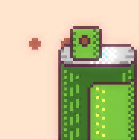
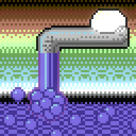
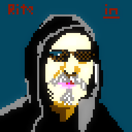

bare spray by ithebatman in 48x48 #pixels using the Swanky16 palette. Visit http://paint.lo4d.net/ to draw your own!

celestial ski jump by ithebatman in 48x48 #pixels using the Swanky32 palette. Visit http://paint.lo4d.net/ to d...
celestial ski jump by Crustolio in 48x48 #pixels using the Swanky32 palette. Visit http://paint.lo4d.net/ to dr...
good faucet by ithebatman in 64x64 #pixels using the C64 palette. Visit http://paint.lo4d.net/ to draw your own!

foreign female by Crustolio in 32x32 #pixels using the Swanky32 palette. Visit http://paint.lo4d.net/ to draw y...
plenty down by Big_Al in 64x64 #pixels using the NES palette. Visit http://paint.lo4d.net/ to draw your own!

@magic_bane cough working on it. http://paint.lo4d.net/ :)
Damn you Borderlands 2. Linux is what I boot into when I want to do some work... :)
Part one of the video explaining the alpha+7 updates to zee swanky paint. http://paint.lo4d.net/ for more So… https://plus.google.com/109440170884180647149/posts/UPjoXJHP4oa
https://twitter.com/Cmdr_Hadfield/status/516907660718133248 @Cmdr_Hadfield @xranby I read that as "Birds and Bees don't just fap." Which I believe is part of "the talk"
https://twitter.com/johnleach/status/516261790318342144 @johnleach Mulder has to be the figment else the T1000 season breaks it. Which makes him a Durden style character to Scullys mundane life :)
Beware of the cat! https://plus.google.com/109440170884180647149/posts/dmbxohQsy1a
https://twitter.com/johnleach/status/516247378899128320 @johnleach I like to pretend that Colombo hallucinates the first/last 5 minutes of each episode and spends the rest framing someone.
Quite a bit of updates for the latest release. Will do a video explaining them later. http://dime.lo4d.net/dl/swpaint … https://plus.google.com/109440170884180647149/posts/5Ar8meqPHuz
We have a new swankypaint release. I think layers and editing multiple files at once are the big changes :) http://dime.lo4d.net/dl/swpaint #pixelart
-- "one factor of virtual worlds that ... proved irremediably toxic to the medium itself: The people themselves. "
http://terranova.blogs.com/terra_nova/2014/09/making-it-official-rip-terra-nova.html
That's an easy one, visit http://store.steampowered.com/curator/6017948/ for the obvious answer.
A JRPG where all of that tedious JRPG stuff has been removed and replaying is encouraged. Lasts longer than 30 seconds due to TIME TRAVEL.
These curator recommendations on steam are almost tweets. Lets play guess the game.